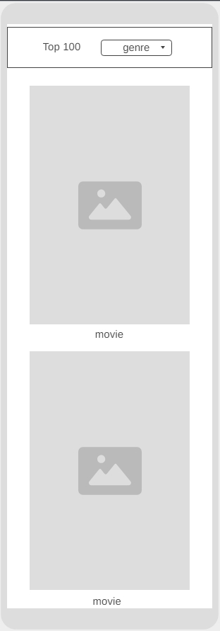

1. Overview
What is the problem we are trying to solve?
There are a lot of streaming platforms with movies but clearly, they don’t have them all. So, if I want to search for a film, I need to enter all the platforms, one by one, and then choose a movie.
Why are we doing this?
I want a movie hub to search for popular movies classified by genre so that choosing a film to watch is easier. Then I just need to search where that movie is available to watch.
2. Who is the audience?
The audience is everyone looking for a good (or bad) film to watch and hard to find. The site will be in English and designed for all ages.
3. List of the major functions of the application
- getMovieData(): an asynchronous function that makes a call to the API to get a list of movies.
- getMovieDetails(movieId): an asynchronous function that makes a call to the API to get a list of details for a specific movie.
- renderMovieList(selector): uses a template to enter all the data from the API into the DOM
- movieDetailsTemplate(movie): a function that returns a template to be used as a callback function of a render function.
- movieTemplate(movie): a function that returns a template to be used as a callback function of a render function.
- sortlList(): this function takes a list and sorts it with the desired order
- filterByGenre(list): this functions takes a list of movies and filters it by genre.
- setClick(): this function sets a listener for both touchend and click
- convertToJSON(): converts a response from the API to JSON and adds a handler for errors from the response.
4. Wireframes of the major views
- Desktop Wireframe
- Mobile Wireframe 
5. External API Data source(s):
6. Initial Module list
- •Index.html
- •JS: MovieList, MovieDetails, MovieData
- •CSS: base.css, large.css
7. Colors/Typography/specific element styling
- Colors: Primary: #777, Secondary: #333, Details: #8E0606
- Typography: Poppins, sans-serif
8. Schedule
- Week 5: initial module list, basic styling and data retrieval
- Week 6: Classes and data organization, CSS animations, bug fixing
- Week 7: testing and final CSS corrections